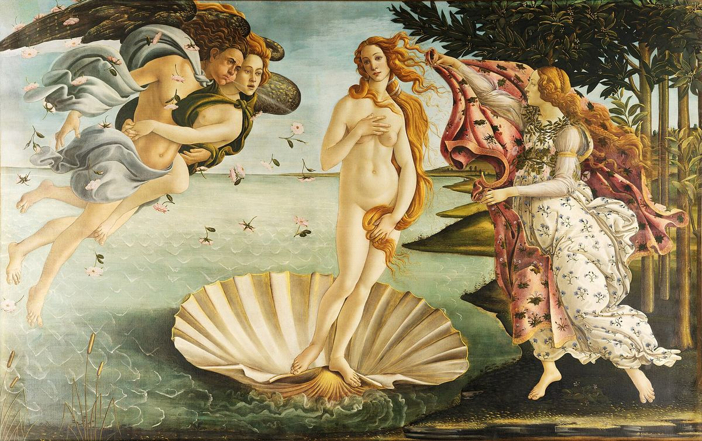

The Birth of Venus

Palette
- Bone · your word: Beige
- Black olive · your word: Gunmetal
- Sand · your word: Tan
- Camel · your word: Camel
- Raw umber · your word: Brown
- Moss · your word: Moss
- Sienna · your word: Sienna
Botticelli painted this in tempera on canvas, not oil, which gives it a pale, matte light. The Uffizi notes that the glints in Venus's hair are real gold. Look how little strong color there is: most of the palette is ivory, tan and camel, a grey-green sea, and one warm accent in the rose-red cloak held out to her on the right. This photo is the Google Art Project capture with its levels lightened; the raw capture is much darker.
Image
Wikimedia Commons · Public domain

Hex values are screen approximations. Every page lists its sources.